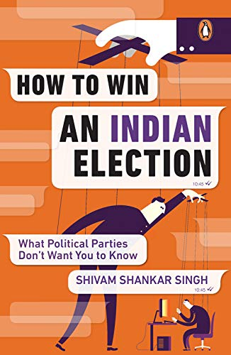

How to Win an Indian Election

By Shivam Shankar Singh
My thoughts
Elections around the world and across time are won remarkably similar ways. It's a fascinating study in mass psychology and the lengths to which leaders go to win.
Indian elections are rife with corruption, illegal money and media spectacles, but a relatively new form of influence has changed the political landscape: whatsapp and social media outlets that pump out fake news.
This form of mass manipulation de-sensitizes the public to facts and turns elections into an arms race of narrative driven news bait.
'Political Operatives' constantly spin the narrative around the election. Politicians try to pit groups of people against each other for more votes. They strategically pick enemies and talk about controversial issues to create public outrage.
With a smart, young politically-unaffliated population, it is my expectation and hope that there will be a shift in political culture in the next decade where competent, scientific-minded and empathetic politicians are elected to office.
Notes
How It Started
Narendra Modi's campaign made such compelling use of new tools, such as social media advertising, rallies with 3D holograms and gripping messages on key issues, for example, corruption and price rise, that the individual appeared larger than the party did.
Personality cult was created and how an effective campaign could transform a politician into a demigod and a saviour.
Facebook pages people believe to be neutral are actually managed by political parties. Even pages that post just news articles can be used to subtly shape voter mindsets based on which news they choose to publish and which they ignore. Facebook pages published pro-SDF news while ignoring news stories against the party so that the achievements were what most people saw while the criticism reached a much smaller audience.
Political Consultants
The remark allowed IPAC and Nitish Kumar to frame a new narrative of Bihari pride, turning the race into a fight between ‘Bihari versus Bahari ’ (Bihari versus outsider). Twisting statements for political gain takes place with remarkable frequency in Indian politics and all sides wait for their opponent to commit unforced errors.
A politician needs the ability to foretell what is going to happen tomorrow, next week, next month, and next year. And to have the ability afterwards to explain why it didn’t happen.
The narrative around an election is usually constructed after the results come out. People marvel at how brilliantly an election strategy was executed.
Most successful politicians see developmental activity and interactions with constituents as a tool to build a brand.
If the contest was framed as a battle between the Maharaja and the ‘aam aadmi ’ (common man), then the Maharaja might have lost. The team at IPAC realized this early on and started the branding process that would transform the Maharaja into ‘Captain’ Amarinder Singh, a designation consciously chosen from his days in the army.
He promised to work on addressing all these problems within the first 100 days of his government coming to power. This gave people who had filled out the forms a vested interest in supporting him during the elections and ensuring his victory.
If a politician failed to build a strong brand for themselves, this left the door open for the opposition to build one for them.
By making memes of every mistake and ensuring every gaffe reached millions of viewers, the BJP transformed Rahul Gandhi into ‘Pappu’, convincing people that he was too dumb to be a leader. Several other politicians have made gaffes similar to the ones made by Rahul Gandhi, but since they had built a strong brand for themselves beforehand, the mistakes didn’t become a part of their public persona. Even the fact that PM Modi wears designer clothing worth lakhs and spends crores on his advertising or on trips abroad hasn’t detracted from his image of being a ‘fakir’ (ascetic) who comes from a humble background.
Who ensured that press releases could be sent out on every incident, written in such a manner that journalists could copy–paste the content without putting in much effort.
Even incidents that appeared to be aberrations, such as someone throwing ink on a leader or someone attacking a politician for holding a certain opinion, were also at times well-thought-out strategic ploys.
Such coverage rarely happens organically in India. Many of those who receive it do so because they have cultivated a relationship with people in the media who are willing to write about them, sometimes in exchange for favours
It takes a massive PR exercise to ensure that the message cuts through not just competing messages from political parties but also those from companies selling their wares to reach the intended voters
People choose the side they believe to be the best, not one that is objectively better.
Through years of mismanagement, sections of the voting population had been made accustomed to corruption so that they wouldn’t even consider voting for a candidate who didn’t pay them.
Technology and Data
The algorithm that we wrote rated each of the booths as ‘favourable’, ‘battleground’, ‘weak battleground’ or ‘difficult’, based on our assessment of how likely we were to be the single largest party in that booth.
Normalization allowed us to give responses from some demographic sets more weightage than others so that the entire set would be the closest to the true opinions of the underlying population, and not a skewed representation where the opinions of any particular community swayed the data more than their share in the population would allow for.
Trump’s advertisements were action-oriented and 84 per cent of them asked the viewer to undertake some kind of action, a method of advertising that is proven to be more effective than one just explaining the benefits and features of a product.
It was only when I started working in politics that I realized that such a narrative rarely forms organically. It takes great effort and constant repetition for an idea to grip the minds of so many people.
"Surgical Strike": A bombardment of information through news channels and social media platforms convinced the nation that something truly extraordinary had taken place.
By making use of people’s pre-existing biases, individuals could be turned into supporters by a party through messaging that would make them believe that the party had exactly the same goals as they did
There are lakhs of karyakartas who are thrilled to help out with anything that has them doing something other than simply distributing pamphlets and putting up flags. They can be tasked with manually classifying a few names in each constituency so that an algorithm can assign a caste to the entire dataset using their input. Local karyakartas usually know each family’s caste in their area, so this exercise wouldn’t be a difficult one for them.
A person’s electricity bill is directly correlated with their income since people with high income often consume more electricity with gadgets and appliances like air conditioners and geysers and hence have higher bills, while the poor have relatively fewer electrical appliances to consume electricity.
The non-Yadav OBCs on the other hand could be convinced to vote for Party 1 if it could provide them with an effective reason to do so. The simplest way to achieve this goal would be for Party 1 to instill a sense of victimhood in the non-Yadav voters and alienate them from the Yadav voters.
Over a period of two to three months, the arguments sent over WhatsApp would become a part of people’s daily conversations and they would begin to get convinced that their rightful share of benefits had been taken away by the Yadavs. After such priming, they could easily be influenced to hold the opinion that this ‘injustice’ would not be rectified unless they were to teach Party 2 a lesson by voting against it, leading to an increase in the chances of Party 1 winning.
Fake News and Propaganda
Most voters believed that being added to a political WhatsApp group gave them access to some kind of insider information. Instead of being irritated by the messages, they read them with gusto, in the belief that they were receiving information from a credible source.
If you repeat a lie often enough, people will believe it, and you will even come to believe it yourself,’ and, ‘Propaganda works best when those who are being manipulated are confident they are acting on their own free will.
Politics at its core is the art of influencing public opinion.
This means that winning elections requires a political party or an individual politician to exercise some control over public opinion. Such control is also required after winning an election, because reforming a system requires a favourable public opinion, which can only be garnered through constant messaging and propaganda
The brilliance of this form of propaganda was that it created new enemies for the Indian masses to hate, and thereby focused public attention on these so-called enemies instead of on issues that would affect their everyday lives
Winning an Election
There are many politicians who want to do good work and help people in their constituencies, but these are still ancillary functions. The primary goal of a politician is always to win elections.
Critical feedback can easily be misinterpreted as blame, and that would risk the messenger’s own political career. It is a risk that no politician is willing to take. A lack of feedback often leaves party leaders misinformed, and several of them end up overestimating their chances of winning elections based on the overly positive feedback provided by people close to them.
Key component of victory is ‘identity politics’. The caste and religious dynamics at play are central to most elections.
The major problem with such parties is that they often have to rely upon a sense of victimhood to keep their voters unified.
Understanding the System
Indian politics is expensive, for candidates and for political parties, but much before a person can think about contesting elections they need to figure out how they will survive while working in politics.
An Indian think tank, Centre for Media Studies, estimated the total expenditure by all parties in the 2014 general elections to be ₹30,000 crore ($5 billion). 3 Even if we disregard unofficial estimates and focus solely on the filings made by political parties, it becomes clear that at least ₹2 crore is required per constituency.
The Experiments
Contrary to popular belief, a party’s ideology is mostly immaterial when it comes to governance. Ideological considerations are limited to speeches and drafting of party documents. What defines the actions of a party are the communities they must cater to in order to win elections.
For anyone who wants to achieve something positive through politics, the right question is not which party is the best. The logical question is, in which party can they survive for the longest time.
The right way to choose a party, therefore, is to evaluate which party’s rhetoric and actions are the least offensive to them so that they can stay in it long enough to reach a position of influence to bring about change.